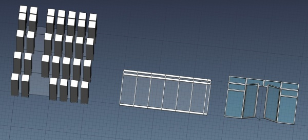

Arch Grid
|
| Menu location
|
| Arch → Axis tools → Grid
|
| Workbenches
|
| Arch
|
| Default shortcut
|
| None
|
| See also
|
| Axis
|
|
Description
The Grid tool allows you to place a grid-like object in the document. This object is meant to serve as a base to build Arch objects that need a regular but complex frame, such as windows, curtain walls, column grids, railings, etc. The Grid object is editable like a spreadsheet, where you can add or remove columns and rows, define their size, and merge cells.
The Grid is a 2D object, and can therefore be used anywhere a 2D shape such as a Draft or Sketch is needed, but it can also behave as a Arch AxisSystem, and be used to propagate the placement of other Arch objects.

The image above shows a grid of columns, a railing system and a window, each based on a Grid object.
How to use
- Press the Arch Grid button
- Set the Width and Height of the grid in the properties
- Enter edit mode by double-clicking the grid object in the tree view
- Add rows and columns
- Set the desired width and height of rows and columns by double-clicking the row or column headers
Options
- A column width or row height of 0 means its size will be adapted automatically to fit the total width/height of the grid
- Cells can be merged and unmerged by selecting them and clicking the appropriate button
- When used as the Axis property of other Arch objects, the grid will drive the positioning of these objects. The Points Output property defines how the other objects are placed on the grid: At vertices, edge midpoints or face centers
- By setting the Auto Height or Auto Width properties to a non-zero value, the total number of rows/columns and their individual heights/widths is ignored. Instead, the maximum number of columns or rows of the given auto width/height get automatically created
Properties
- DATARows: The number of rows
- DATAColumns: The number of columns
- DATARow Size: The sizes for rows
- DATAColumn Size: The sizes of columns
- DATAPoints Output: The type of 3D points produced by this grid object
- DATAWidth: The total width of this grid
- DATAHeight: The total height of this grid
- DATAAuto Width: Creates automatic column divisions (set to 0 to disable)
- DATAAuto Height: Creates automatic row divisions (set to 0 to disable)
- DATAReorient: When in edge midpoint mode, if this grid must reorient its children along edge normals or not
- DATAHidden Faces: The indices of faces to hide
Scripting
The Grid tool can by used in macros and from the python console by using the following function:
makeGrid()
{kind=link}
{kind=link}